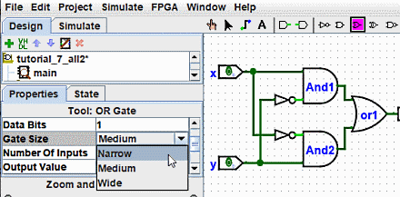
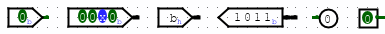

上一节: 属性表
工具和组件的属性
用于将组件添加到电路的每个工具还具有一组属性，这些属性被赋予该工具创建的组件，尽管组件的属性稍后可能会更改而不会影响工具的属性。 当您选择一个工具时，Logisim-evolution 将更改属性表以显示该工具的属性。
例如，假设我们想要创建更小的与门。 现在，每次我们选择 AND 工具时，它都会创建一个大的 AND 门。 但是，如果我们在选择工具后（在将其与门放入电路之前）编辑“门大小”属性，我们将更改该工具的属性，以便将来使用该工具添加的与门将会变窄。

现在，我们可以删除两个现有的与门并在其位置添加两个新的与门。 这一次，它们将变得狭窄。 （如果您选择将输入数量减少到 3 个，则与门的左侧不会有垂直延伸。但是您还必须重新布线电路，以便导线到达与门的左侧。）

对于某些工具，工具的图标反映了某些属性的值。 其中一个例子是“固定”工具，其图标的朝向与其“Facing”属性所示的方向相同。
工具栏中的每个工具都具有与资源管理器窗格中相应工具不同的属性集。 因此，即使我们更改了工具栏的 AND 工具来创建窄 AND 门，Gates 库中的 AND 工具仍然会创建宽 AND 门，除非您也更改其属性。
事实上，默认工具栏中的输入引脚和输出引脚工具都是Wiring库的Pin工具的实例，但属性集不同。 Pin 工具的图标绘制为圆形或方形，具体取决于其 Output? 属性的值。

Logisim-evolution 提供了一个方便的快捷方式来更改控制许多组件面向方向的 Facing 属性：在选择该工具时键入箭头键会自动更改组件的方向。
返回: 图形界面.